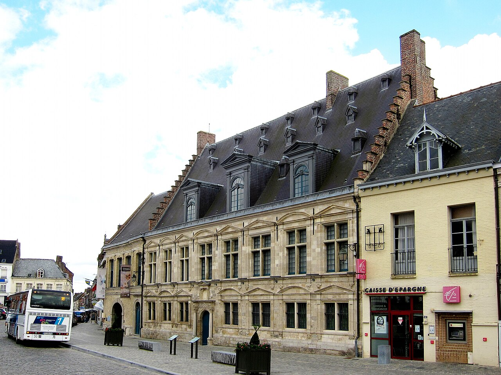

Soumission et colère
Images de pouvoir, de croyance et de conflit : les œuvres permettent de questionner la manière dont une société figure l’autorité, la révolte ou la violence.
Le Musée de Flandre ne présente pas seulement des tableaux flamands anciens. Installé dans l’Hôtel de la Noble-Cour, il fait dialoguer les peintures, objets, sculptures et créations contemporaines pour interroger les multiples façons de représenter la Flandre. Son parcours thématique, plutôt que strictement chronologique, permet de confronter des œuvres de siècles différents.

Le musée annonce officiellement que seul le rez-de-chaussée est accessible du 3 au 23 octobre inclus en raison du réaccrochage des œuvres du parcours permanent. Si vous venez pendant cette période, ne vous attendez donc pas à parcourir toutes les salles ni à retrouver les œuvres présentées sur d’anciennes photos.
Cette restriction est datée : elle ne doit pas être extrapolée aux jours suivants. À partir du 24 octobre, renseignez-vous auprès de l’accueil sur l’état du réaccrochage et la réouverture des étages, plutôt que de présumer que tous les espaces sont de nouveau accessibles.
Avertissement officiel sur l’accessibilité temporaire du parcours.
Le musée occupe l’Hôtel de la Noble-Cour, ancien siège de la châtellenie, bâti au XVIe siècle. Sa façade avant en pierre emprunte à l’architecture des palais italiens de la Renaissance, tandis que la façade arrière en brique rappelle des traditions de construction flamandes. Boiseries, parquet et cheminées conservés témoignent des transformations successives de l’édifice.
Situé sur la Grand’Place de Cassel, il fait partie du paysage patrimonial du mont Cassel. Le lieu ne joue pas le rôle d’un simple contenant : le visiteur observe l’art flamand dans un bâtiment lié à l’histoire des pouvoirs et de la ville. Le musée a rouvert dans cet édifice en 2010.
La collection associe peintures, dessins, estampes, sculptures, céramiques et objets relevant aussi de l’histoire locale. Son parcours ne sépare pas systématiquement les siècles : les tableaux des XVIe et XVIIe siècles peuvent répondre à des œuvres contemporaines. Le musée réunit notamment des œuvres de Roelandt Savery, Joachim Patinir, David Téniers et, pour la création récente, Wim Delvoye ou Koen Vanmechelen.
Images de pouvoir, de croyance et de conflit : les œuvres permettent de questionner la manière dont une société figure l’autorité, la révolte ou la violence.
Les paysages et représentations du monde invitent à comparer l’observation du réel, l’imagination et les dimensions spirituelles de l’image flamande.
Les détails minutieux, les scènes foisonnantes et les jeux d’échelle montrent comment l’art peut osciller entre maîtrise de la composition et excès volontaire.
Objets d’apparat, humour, satire et mises en scène sociales invitent à interroger les apparences et les codes d’une époque à l’autre.
Ce découpage thématique aide à comparer des démarches et des imaginaires. Ce n’est pas un inventaire garanti des quatre sections accessibles le 23 octobre 2026, compte tenu du réaccrochage.
Parcours permanent et quatre thèmes officiels · collections et artistes.
Le musée annonce des peintures liées à de grands noms de la tradition flamande, parmi lesquels Bosch, Brueghel, Van Dyck et Rubens. Mais la particularité de Cassel n’est pas de proposer une simple liste de chefs-d’œuvre. Les œuvres servent à éclairer des questions sur le paysage, les croyances, la société ou le goût de l’étrange.
Choisissez par exemple une scène très détaillée et cherchez comment les personnages, les objets et le décor guident votre regard. Puis comparez ce travail à une création contemporaine placée dans la même thématique. La confrontation entre l’ancien et le récent permet d’observer ce qui change dans les techniques et ce qui demeure dans les préoccupations humaines.
Les dépôts de peintures provenant de Valenciennes, intégrés au renouvellement de 2022, illustrent aussi le fait que le musée construit son parcours grâce à des acquisitions et à des prêts. Les accrochages évoluent.
Source : collections et politique d’accrochage.
Partez des thèmes plutôt que des siècles : regardez un paysage, une scène de société et une œuvre contemporaine afin de comparer trois façons de représenter la Flandre. Adaptez le parcours aux salles réellement ouvertes.
Le musée propose la besace à audaces, un parcours autonome à partir de 2 ans, ainsi que des visites et ateliers pendant les vacances. Réservez lorsque l’activité le nécessite ; consultez l’agenda pour les horaires et les places disponibles.
Des visites « Rondleiding van het museum » sont programmées notamment les 25 octobre et 1er novembre 2026. Vérifiez les modalités de réservation et le maintien des séances avant de venir.
Observez les éléments de la Noble-Cour dans les espaces accessibles et replacez-les dans le cadre historique de la Grand’Place et du mont Cassel.
Du mardi au vendredi, de 10 h à 12 h 30 puis de 14 h à 18 h ; samedi et dimanche de 10 h à 18 h en continu. Fermeture le lundi ainsi que les 1er janvier, 1er mai et 25 décembre.
8 € plein tarif, 6 € ou 4 € selon les conditions. Entrée gratuite pour les moins de 18 ans, le premier dimanche du mois et certains autres publics. Audioguide des collections affiché à 2 € ; visite guidée individuelle de la collection également annoncée à 2 € selon conditions.
À Cassel, au 26 Grand’Place, dans le département du Nord. Le musée indique environ 40 minutes de route depuis Lille et 35 minutes depuis Dunkerque, selon les conditions de circulation. Vérifiez votre itinéraire et le stationnement avant la venue.
Le musée dispose d’équipements et de visites adaptés, notamment des maquettes tactiles, des supports en gros caractères, des propositions en LSF et des visites accessibles. Un visiteur en situation de handicap bénéficie de la gratuité selon les conditions officielles. Les consignes sont gratuites ; les bagages volumineux ne sont pas acceptés.
Conditions officielles · Réseau Muzéa : services, tarifs et gratuités. Vérifié le 23 octobre 2026.
Le Musée de Flandre convient à une visite consacrée aux imaginaires et aux créations flamandes, anciens et contemporains, dans un bâtiment historique. La Piscine de Roubaix associe davantage arts et patrimoine industriel textile, tandis que le Palais des Beaux-Arts de Lille réunit des écoles de peinture et des collections plus encyclopédiques. Retrouvez les autres propositions dans notre sélection Hauts-de-France.